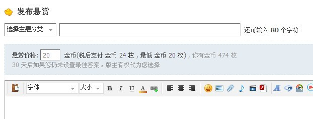

建议创造一个特殊板块（交易专区）
#1 建议创造一个特殊板块（交易专区） 作者：踵酃 发表时间：2011-6-17 0:01:14
钱多没地花， 不是鲜花就是臭鸡蛋。
钱少没地赚， 不是发帖就是被犒赏。
口号 “实行自力更生，我要当论坛金币大亨”
创造论坛“交易区，悬赏专帖 ”
宣传口号“我出金币（or 鲜花），你出力”
优点：
1。有人想问问题， 但却没人注意，这个时候提出金币悬赏，引人注目。 解决问题的成功率高。
2。帮助论坛金币流量，增加活跃动力。
以下省略10条优点。
以IWZQ的技术支持团队技术，一定能创造出接近完美的交易系统
#2 Re:建议创造一个特殊板块（交易专区） 作者：絕版賭徒 发表时间：2011-6-17 0:32:31
最好弄个模拟炒股版块,大盘不变,人民币用金币替代,我就不信我金币涨得这么慢~~~~~~~~~~~~!!!!
#3 Re:建议创造一个特殊板块（交易专区） 作者：游戏人间 发表时间：2011-6-17 0:41:45
楼上有多少金币啊
#4 Re:建议创造一个特殊板块（交易专区） 作者：我就不信注册不上 发表时间：2011-6-17 1:08:16
这个问题简单，换成Discuz!论坛就行了，开设版块，设置只允许发布悬赏主题#5 Re:建议创造一个特殊板块（交易专区） 作者：我就不信注册不上 发表时间：2011-6-17 1:09:58

Discuz! X1.5论坛悬赏发帖界面如图
#6 Re:建议创造一个特殊板块（交易专区） 作者：絕版賭徒 发表时间：2011-6-17 1:37:31
本来只有一千多,现在10000多,前段时间剥削了棋情10000块,可以买100手［此帖子已被 絕版賭徒 在 2011-6-17 1:38:40 编辑过］
#7 Re:建议创造一个特殊板块（交易专区） 作者：潇洒 发表时间：2011-6-17 2:45:50
支持楼主...
#8 Re:建议创造一个特殊板块（交易专区） 作者：极地剑客 发表时间：2011-6-17 2:47:23
一个mmqq号码多少金币？照片多少？哥全买了，堵徒速度发美眉来#9 Re:建议创造一个特殊板块（交易专区） 作者：岑小鱼 发表时间：2011-6-17 19:16:21
自己加上句:为第一个解决者奉上金币NNNN。。不就可以了吗，何必搞的那么复杂。#10 Re:建议创造一个特殊板块（交易专区） 作者：絕版賭徒 发表时间：2011-6-18 1:54:18
8楼,发你一袋100G的种子吧#11 Re:建议创造一个特殊板块（交易专区） 作者：高飞 发表时间：2011-6-18 18:49:34
 还不如做一个竞猜系统 比赛的时候 压金币
还不如做一个竞猜系统 比赛的时候 压金币